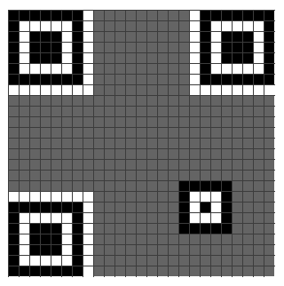

Area51 :
We got some Secret of Area51, But its look can you help me?
strings gives some info :
strings Area51.zip
Area51/PK
Area51/secret.txt
Area51/
Area51/secret.txt
Use John to crack :
zip2john Area51.zip > crackzip.txt
john --format=zip --wordlist=/root/Desktop/rockyou.txt crackzip.txt
got the pass : princess101
trying to extract but failed!!!
binwalk Area51.zip
DECIMAL HEXADECIMAL DESCRIPTION
--------------------------------------------------------------------------------
0 0x0 Zip archive data, at least v1.0 to extract, name: Area51/
37 0x25 Zip archive data, encrypted at least v2.0 to extract, compressed size: 53, uncompressed size: 23, name: Area51/secret.txt
363 0x16B End of Zip archive, footer length: 22
So we will use 7-zip : It worked
POC : use 7-zip to crack with pass : princess101
FLAG: Sl7{AreY0u-In-Ar4a-51?}
QRKrack : Repair it and prove yourself!
[[TRIED IT BUT FAILED]]
We know that the QR code is VERSION 2 : (its 25*25)
Version 2 codes don't have "Version Info" so we ignore that.
Base structure :

References :
FORMAT AND VERSION INFO : https://www.thonky.com/qr-code-tutorial/format-version-information
15 bits :
error correction level: 2 bit
mask pattern : 3 bit
Error Correction Bits : 10 bit
FORMAT AND VERSION INFO Bits: 111110110101010
Getting Original string by doing XOR with : 101010000010010

Original String : 10100110111000
Error correction level : 10 : 2 (HIGH)
Mask pattern : 100 : 4 (level : 4) {IMPORTANT FOR DECODING}